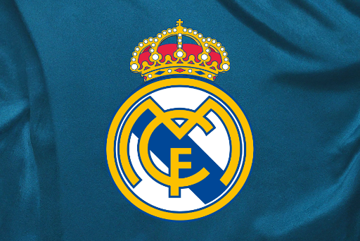

Soccer Ranker
Soccer Ranker
Real Madrid CF: Top 10 Best Currently Playing Players
Fans across the world voted to determine which RMCF player they thought was the best, and the results display who have the highest rankings!
PUBLISHED MAR 4, 2024

In celebration of Real Madrid CF's 122nd creation anniversary and their recent Supercopa de España triumph, fans were asked to
send in their votes of who their top players are, and the results were tallied in the RMCF top 10 poll from reddit's r/realmadrid.
With a large variety of players to choose from, it's no surprise that many voters struggled to pick the best. However, some
players have stood out more to fans and enjoyers, whether through their skills, personality, or much more. The team wouldn't be
the same without them.
10
Brahim Díaz
RMCF's spanish star with immense potential. His technical brilliance on the ball makes him a joy to watch. He possesses remarkable close control, dribbling ability, and the vision to unlock defenses with creative passes. Diaz is versatile, comfortable playing as an attacking midfielder, a winger, or in a slightly deeper role. Despite his young age, he has shown maturity and composure when in possession. While still developing, Diaz's talent and adaptability make him a valuable asset to Real Madrid's attacking arsenal for years to come.
9
Antonio Rüdiger
RMCF's powerful and aggressive center-back. He is known for his strength in tackles and dominance in the air. His arrival at Real Madrid has bolstered their defense, making him a formidable obstacle for attackers to overcome. Rüdiger's physicality and fearless attitude instill a sense of confidence in the backline. His pace is also an asset, allowing him to recover quickly in counterattacking situations. While occasionally prone to rash decisions, his overall impact on Real Madrid's defense has been undeniably positive.
8
Rodrygo
RMCF's young Brazilian sensation. He is a vital asset to Real Madrid due to his unpredictable attacking flair and clutch performances. He possesses excellent technical skills, allowing him to dribble past defenders and create scoring opportunities. Rodrygo's composure in front of goal is remarkable, and he has a tendency for scoring crucial goals in big matches, like his 2 goals in rapid succession against Manchester City in the semi-finals of the UCL in 2022. And with his youthful energy and fearlessness on the pitch he makes himself a constant threat that provides a spark to the Real Madrid attack. A true Real Madrid gem.
7
Daniel Carvajal
RMCF's rock-solid right-back. A determined defender, his tackling and positional awareness often shut down attacks. Going forward, Carvajal is an outstanding attacking threat. His pinpoint crossing, intelligent overlapping runs, and link-up play with wingers create numerous scoring chances. Carvajal's consistency and reliability are cornerstones of Real Madrid's success. His defensive solidity and attacking contributions make him an indispensable player for the team.
6
Eduardo Camavinga
RMCF's dynamic French midfielder. He's a powerful presence in midfield, combining relentless energy with phenomenal ball control and dribbling skills. His versatility is a major asset; Camavinga has excelled not only as a central midfielder but also as a defensive midfielder and even at left-back. This adaptability, coupled with his ability to break up opposition attacks and smoothly transition into Madrid's offense, makes him invaluable. Camavinga possesses maturity beyond his years and is undoubtedly a cornerstone of Real Madrid's future.
5
Aurélien Tchouaméni
RMCF's powerhouse of a defensive midfielder. His defensive prowess is extraordinary; his ability to read the game, intercept passes, and win tackles disrupts even the most potent attacks. Tchouaméni's passing is accurate and intelligent, allowing him to dictate play from deep. His physicality and composure under pressure, especially for a young player, are impressive. He is also great at making long shots, which often also result in goals. He seamlessly fills the defensive midfield role vacated by the legendary Casemiro, making him a priceless addition to Real Madrid's squad.
4
Federico Valverde
RMCF's energetic Uruguayan midfielder. His relentless play and box-to-box dynamism make him a force to be reckoned with in midfield. Valverde's technical skills are impressive, with his ability to dribble past defenders and unleash powerful shots. His tactical intelligence and work ethic off the ball are equally valuable, ensuring Real Madrid maintain a balanced shape. Valverde's versatility to play multiple midfield roles and even at right back adds immense value. He embodies Real Madrid's spirit, making him a fan favorite and a key player for years to come.
3
Toni Kroos
RMCF's midfield maestro. His vision and passing range are unmatched, allowing him to dictate the tempo of the game with pinpoint accuracy. His technical ability and composure under pressure are exceptional, making him the conductor of Madrid's attack. Kroos's tactical intelligence is also crucial; his positioning and movement off the ball create space and opportunities for his teammates. With his ability to control the game's pace and orchestrate attacks, Kroos is the heartbeat of Real Madrid's midfield.
2
Vinicius Junior
RMCF's Brazilian superstar. He has become a talisman for Real Madrid. His explosive pace and electrifying dribbling skills make him a nightmare for defenders. Vinicius Jr.'s confidence and flair on the ball are sublime, and he has a tendency for creating goalscoring opportunities out of nothing. Though his finishing was once a weakness, he has developed into a clinical goalscorer, adding another dimension to his already potent attacking threat. Vinicius Junior is a game-changer, electrifying crowds and instrumental in Real Madrid's success. And as a left-winger, he has cemented his place in that position with his unmatched, ballon d'or level skill.
1
Jude Bellingham
RMCF's English super-signing. At first, with his high, 100+ million buying price, fans had their doubts on his ability. But now that time has passed, he has truly became the signing of the season for Real Madrid and the whole of soccer. His all-around excellence makes him a complete midfielder. He possesses incredible technical ability, effortlessly controlling the ball, dribbling past defenders, and finding killer passes. Bellingham is a dynamic box-to-box player, contributing defensively with relentless work rate and contributing offensively with his vision and goal threat. But what truly highlights his masterclass performances is his goal scoring ability as a midfielder. It is truly phenomenal to be the top scorer of La Liga at such a position, and is reminiscent of great midfielders like Zinedine Zidane. His maturity and leadership qualities at such a young age also mark him as a future superstar, making him the perfect centerpiece for Real Madrid's midfield for years to come.
✹
Honorable Mention: Kylian Mbappé
While he is still not an official Real Madrid player, he sure seems to be madrid-bound this summer. With his world class performances at PSG and in the France national team, he is truly a force to be reckoned with once he goes to RM. He is known for his exceptional speed, dribbling ability, and finishing in attack - which will be key for RM's style of play. He is a remarkable player, and truly has the skillsets of those of the greatest soccer players to ever play in the history of the sport.